mafalda moreaud
design graphique
Croquis et illustrations
Formats allant du A5 au A6
2016—2017
Pratique développée librement sur le thème du corps et de l'espace.
Un intérêt est porté à la lumière, à la couleur mais aussi à la touche et à la matière.
« A quoi bon, quand toute l’affaire est de comprendre que nos yeux de chairs sont déjà beaucoup plus que des récepteurs
pour les lumières, les couleurs et les lignes: des computeurs du monde, et qui ont le don du visible comme on dit
que l’homme inspiré a le don des langues. Bien sûr ce don se mérite par l’exercice, et ce n’est pas en quelques mois,
ce n’est pas non plus dans la solitude qu’un peintre entre en possession de sa vision. La question n’est pas là:
précoce ou tardive, spontanée ou formée au musée, sa vision en tout cas n’apprend qu’en voyant, n’apprend que d’elle-même. »
« La vision est suspendue au mouvement. On ne voit que ce qu’on regarde. Que serait la vision sans aucun mouvement des yeux,
et comment leur mouvement ne brouillerait-il pas les choses s’il était lui-même réflexe ou aveugle, s’il n’avait pas ses antennes,
sa clairvoyance, si la vision ne se précédait en lui? »
Maurice Merleau—Ponty,
L'Œil et l'Esprit,
Première parution en 1964
Un intérêt est porté à la lumière, à la couleur mais aussi à la touche et à la matière.
« A quoi bon, quand toute l’affaire est de comprendre que nos yeux de chairs sont déjà beaucoup plus que des récepteurs
pour les lumières, les couleurs et les lignes: des computeurs du monde, et qui ont le don du visible comme on dit
que l’homme inspiré a le don des langues. Bien sûr ce don se mérite par l’exercice, et ce n’est pas en quelques mois,
ce n’est pas non plus dans la solitude qu’un peintre entre en possession de sa vision. La question n’est pas là:
précoce ou tardive, spontanée ou formée au musée, sa vision en tout cas n’apprend qu’en voyant, n’apprend que d’elle-même. »
« La vision est suspendue au mouvement. On ne voit que ce qu’on regarde. Que serait la vision sans aucun mouvement des yeux,
et comment leur mouvement ne brouillerait-il pas les choses s’il était lui-même réflexe ou aveugle, s’il n’avait pas ses antennes,
sa clairvoyance, si la vision ne se précédait en lui? »
Maurice Merleau—Ponty,
L'Œil et l'Esprit,
Première parution en 1964
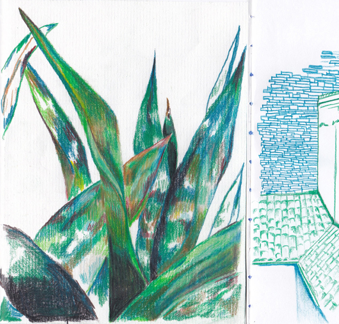
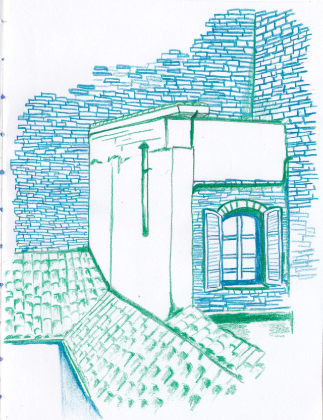
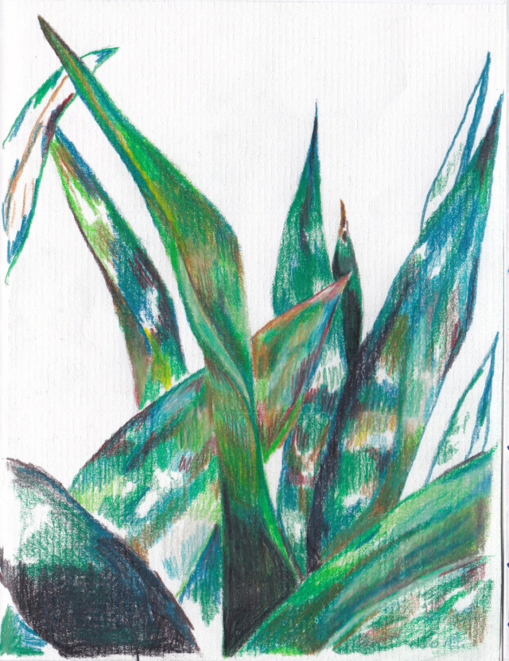
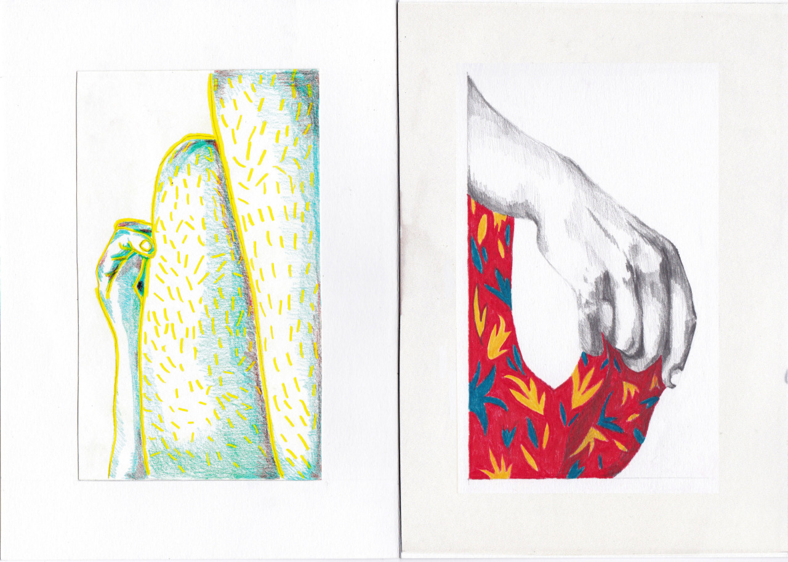
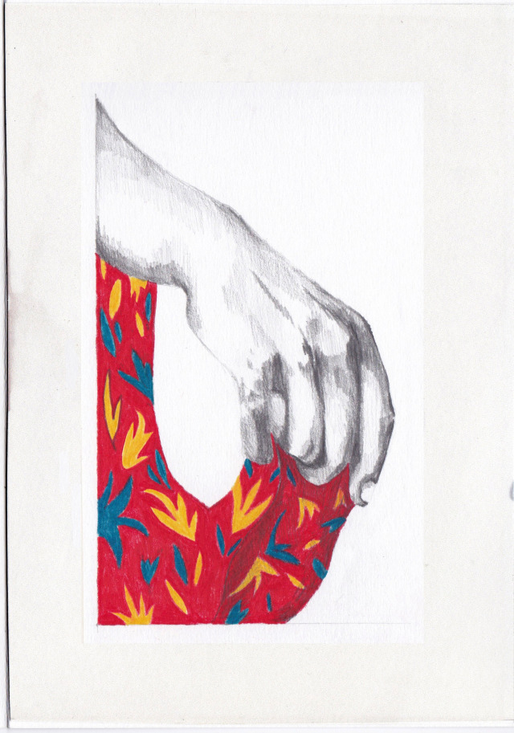
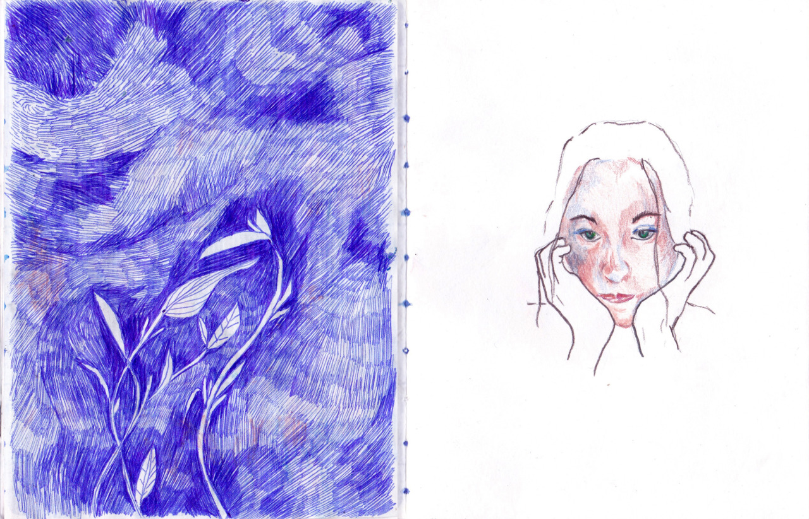
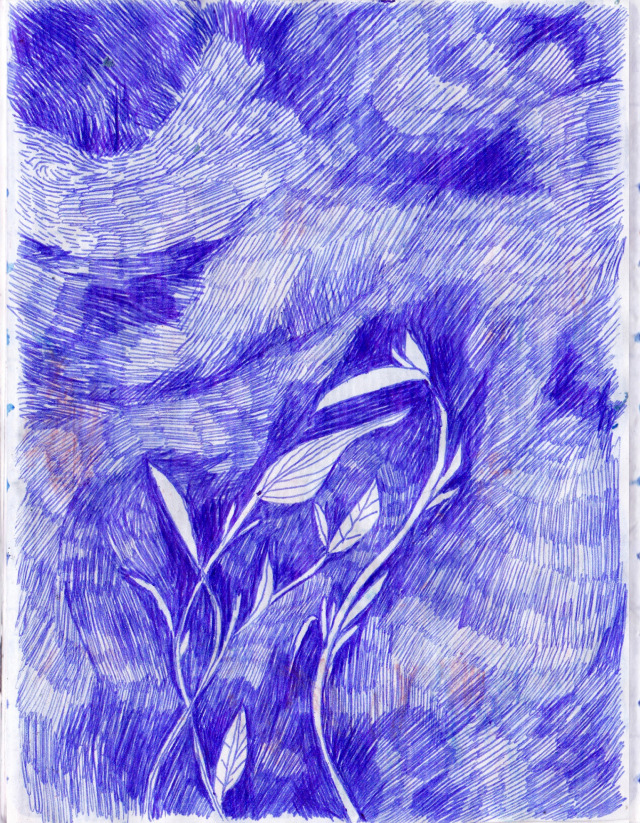
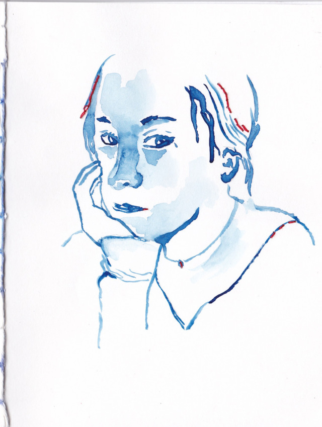
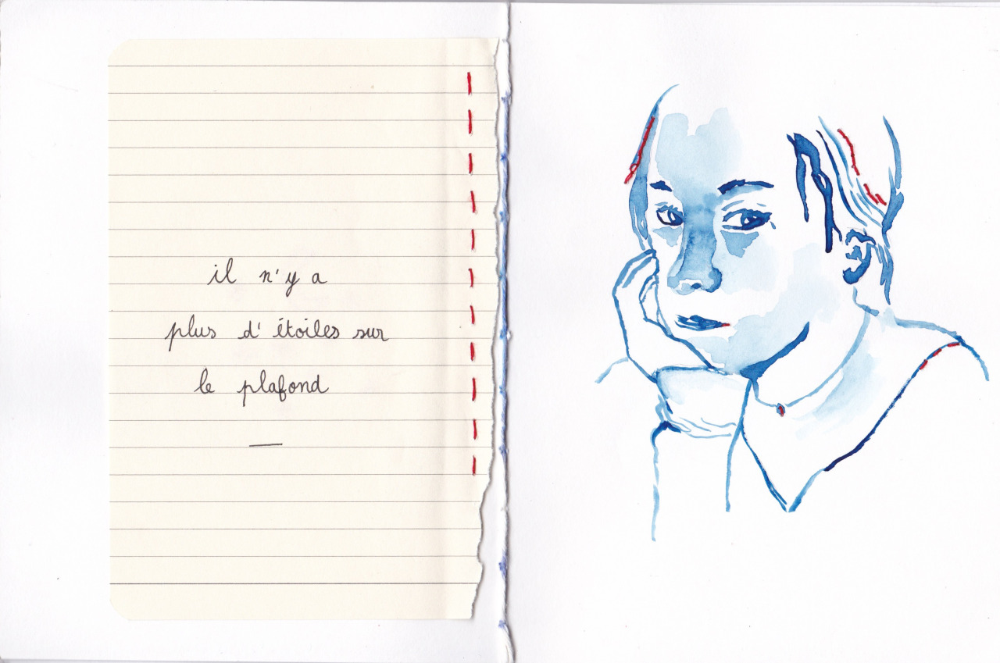
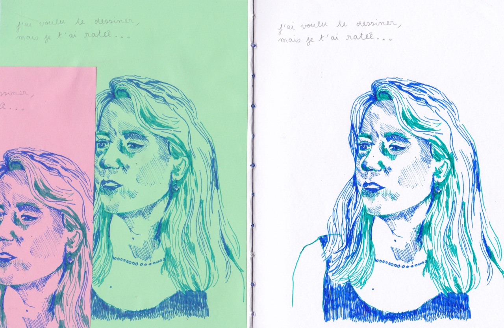
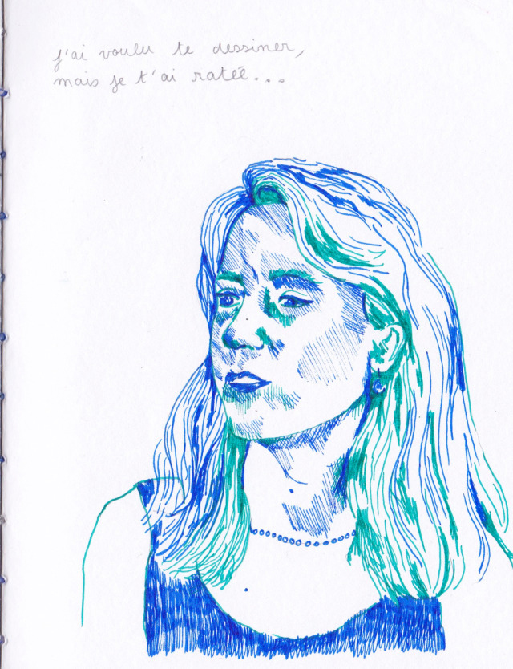
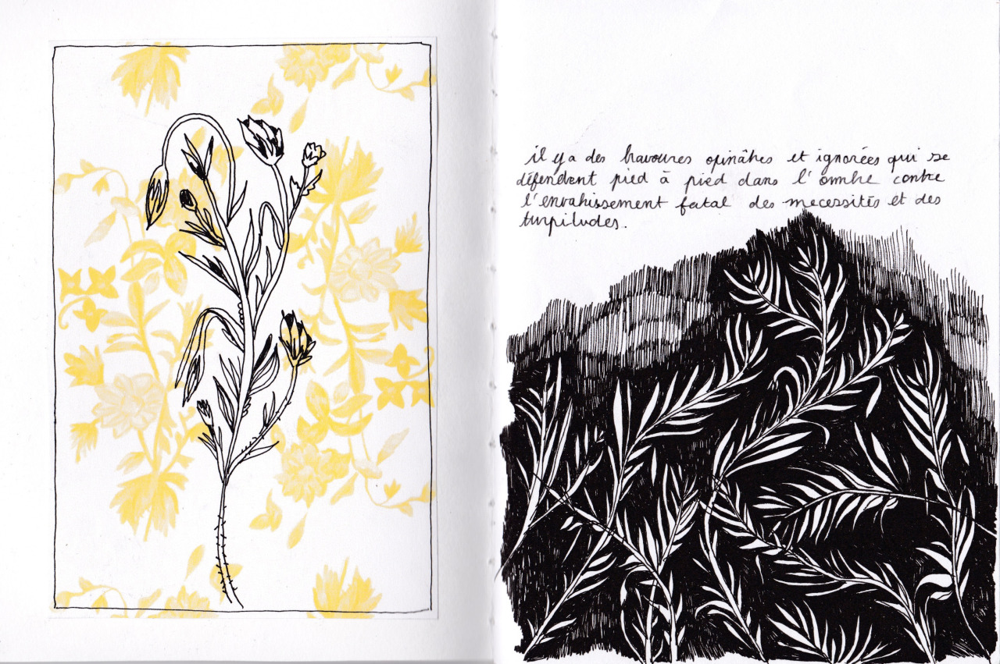
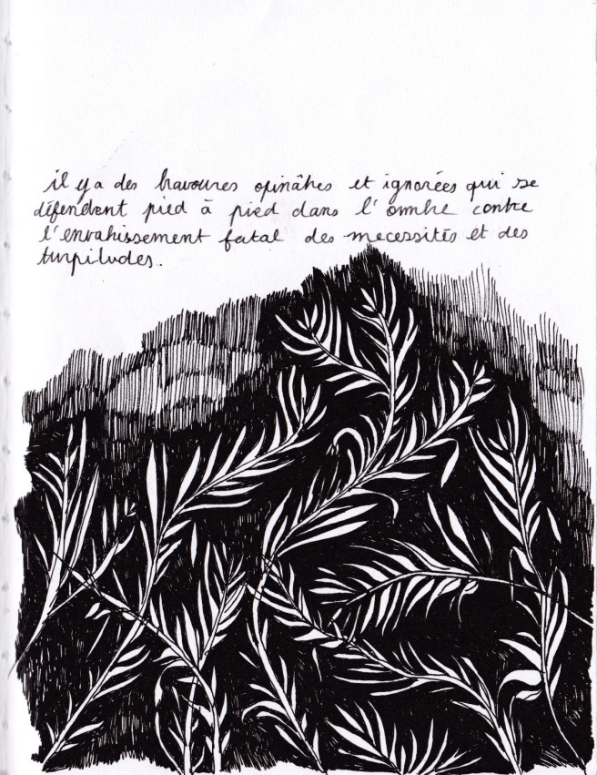
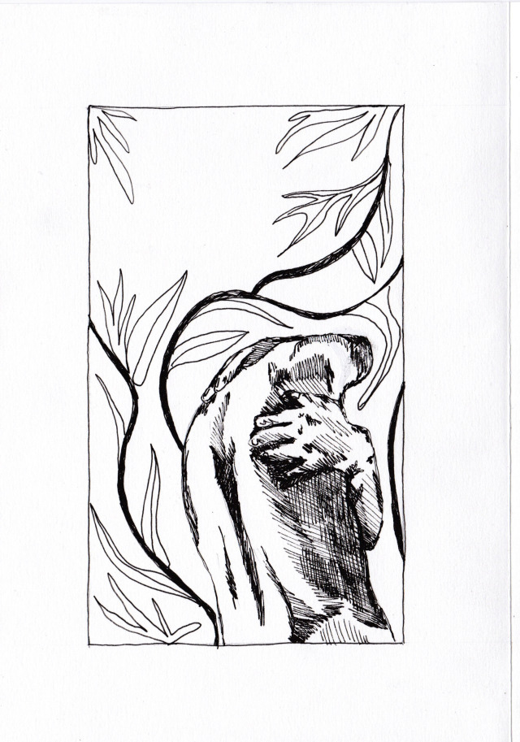
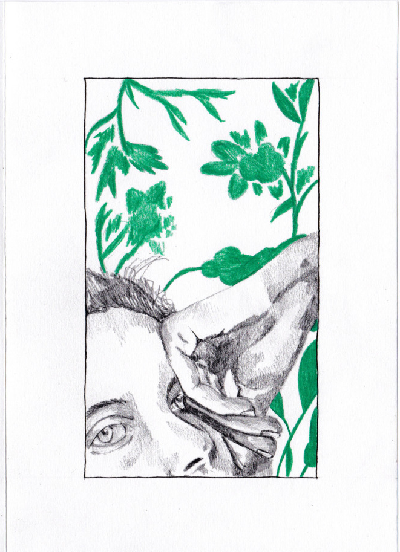
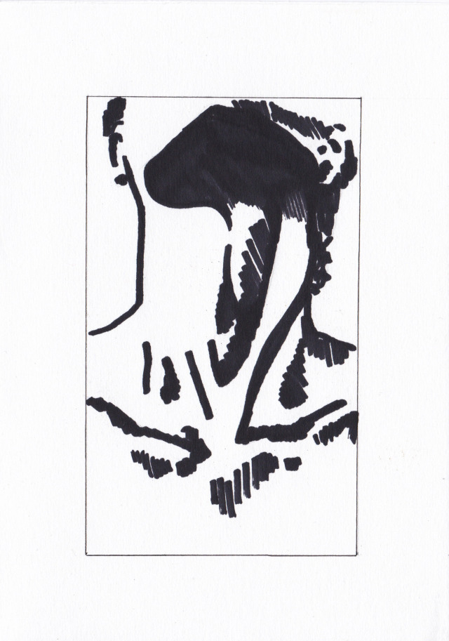

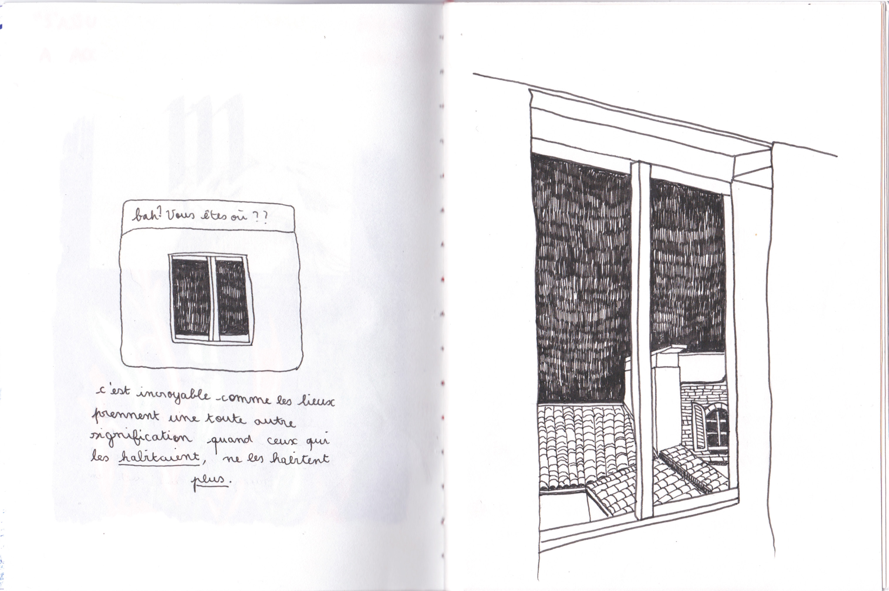